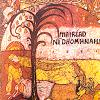

Celtic Lyrics Corner > Artists & Groups > Domhnaill Family > Mairéad Ní Dhomhnaill > Róisín Dubh
|  | Róisín Dubh |
| Credits : | n/a |
| Appears On : | Mairéad Ní Dhomhnaill |
| Language : | Gaeilge (Irish Gaelic) |
| Lyrics : | English Translation : |
| A Róisín, ná bíodh brón ort | Little Rose, be not sad |
| Fár éiri duit | For all that hath behapped thee |
| Tá na bráithre ag teacht thar sáile | The friars are coming across the sea |
| Is iad ag triall ar muir | They march on the main |
| Tiocfaidh do phárdún ón bPápa | From the Pope shall come thy pardon |
| Is ón Róimh anoir | And from Rome, from the East |
| Is ní spárálfar fíon Spáinneach | And stint not Spanish wine |
| Ar mo Róisín dubh | To my Little Dark Rose |
| Ó mhearaigh tú mé, a bhradóg | Thou hast slain me, oh my bride |
| Is nár ba fearrde dhuit | And may it serve thee no whit |
| Is go bhfuil m'anam istigh i ngean ort | For the soul within me loveth thee |
| Is ní inné ná inniu | Not since yesterday nor today |
| Ó d'fhág tú lag anbhann mé | Thou has left me weak and broken |
| I ngné is i gcruth | In mien and in shape |
| Ná feall orm is mé i gnean ort | Betray me not who love thee |
| A Róisín Dubh | My Little Dark Rose |
| ___ | (Missing 2 verses) |